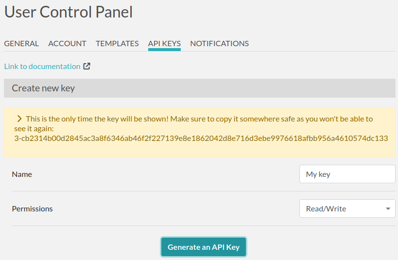

API
What’s that?
It’s a way to read or write data to eLabFTW from an external program (like a Python script).
For instance, instead of using a web browser to access the web interface and create an experiment, you make a call to the API saying “hey, create an experiment for me”, and the api will reply with the ID of the newly created experiment.
It can be used to directly feed data to eLabFTW, coming from a piece of equipment for instance.
Getting started
Generating a key
In order to use the API, you need to generate an API key. Head to the Settings page and create a new key by giving it a name and access level:
Protect this key like you would do with a password, as it gives access to your account!
Basic request
The public API works with HTTP requests, so you are free to use any technology capable to make HTTP requests, which basically includes everything under the sun.
A simple tool to get started is curl (most likely already available if using a GNU/Linux system). Here is how to fetch data of experiment with ID 42:
export KEY=3-cb2314b00d2845a...
curl -H "Authorization: $KEY" https://eln.example.org/api/v2/experiments/42
What we’ve done is use curl to make a GET request to eLabFTW api v2 endpoint. Sending the key in the Authorization header, and specifying that we want the experiment with id 42 in the URL. The response is a JSON object.
Mainly, the API is using HTTP verbs for different actions. GET to read things (will not modify anything), POST to create things, PATCH to modify things, DELETE to, you guessed it, delete things.
For instance, to create an experiment:
curl -I -H "Content-Type: application/json" -H "Authorization: $KEY" -X POST https://eln.example.org/api/v2/experiments
The response headers contain the URL to the created resource in the location header:
HTTP/2 201
content-type: text/html; charset=UTF-8
location: https://eln.example.org/api/v2/experiments/321
...other headers...
You can then PATCH that newly created entry with whatever attributes you wish to change (title, date, main text, tags, etc…):
curl -H "Content-Type: application/json" -H "Authorization: $KEY" -X PATCH -d '{"title": "created from api", "date": "2024-02-15", "body": "main text content"}' https://eln.example.org/api/v2/experiments/321
Everything is described in the documentation generated from the specification.
You’ll probably want to use python or a shell language to build a more meaningful script. Fortunately, a python library is available to make things easy for you (look at the examples folder!).
Read the doc
The complete documentation of all endpoints with code examples is available here: elabftw’s API documentation.